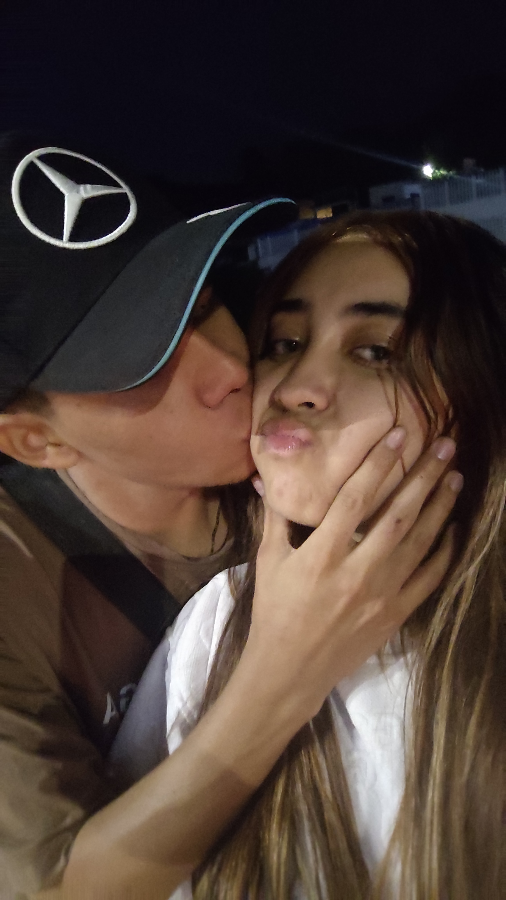
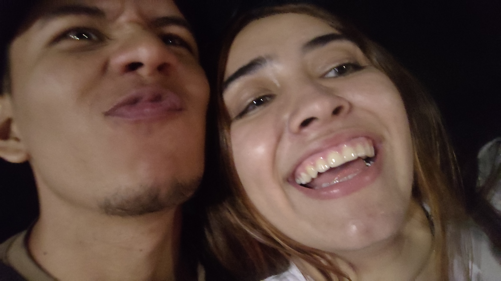
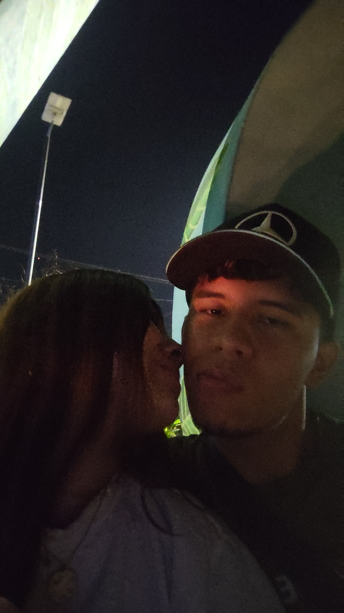
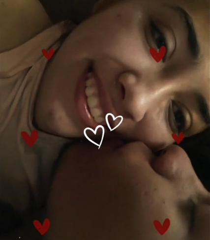

Dania...
Espero que este pequeño regalo te transmita todo lo que siento por ti...
Espero que este pequeño regalo te transmita todo lo que siento por ti...

Ese día me hiciste sentir especial...

Me di cuenta de que tu felicidad era la mía.

Estar a tu lado me llena de alegría y paz.

